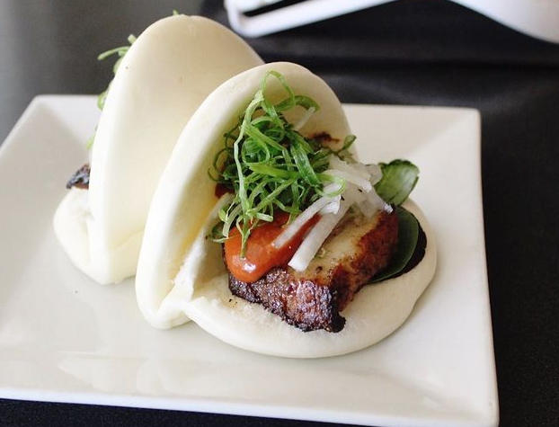

My Favorite Food - Steamed Buns from Crane Ramen in Gainesville, FL
They make several varieties but my personal favorite are the chicken steamed buns, closely followed by the pork. The soft pillowy buns wrapped about the crispy, juicy chicken karaage coated in a rayu-mayonnaise mixture for that creamy, spicy heat, all topped with scallions and the perfect sweet/salty/sour flavor of the pickled radishes to cut through the richness and brighten up the flavors is a genuinely perfect food.
